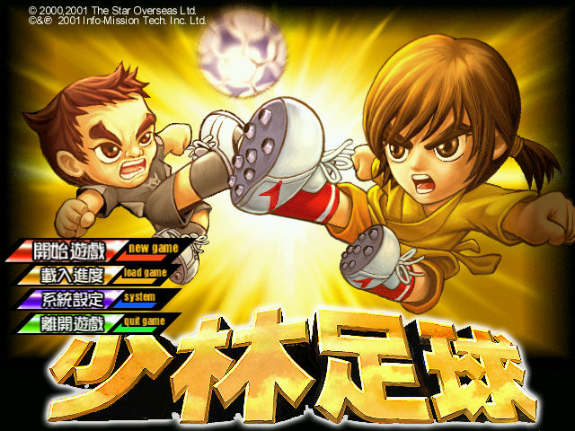
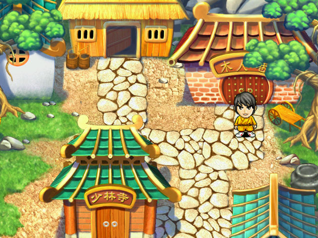
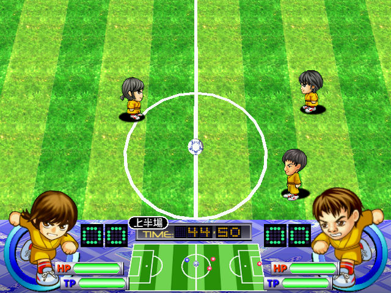

名稱：少林足球／少林功夫足球 (Shaolin Soccer，繁中／簡中版)
簡介：展略2001年出品的足球遊戲，兼具劇情與支線解謎，由奧美電子代理發行，台灣則由
旭力亞開發繁中版，並由元古發行 [待補]。



保護：無（放入第二片才有背景音樂）
備註：簡中版必須在簡中系統上執行，否則文字會亂碼。
檔案：shaolin_patch_1.1.2.rar = 1.1.2更新檔（繁簡均適用）
操作：
Z/Ctrl = 確認／比賽中調出選單／換人
X/Alt = 取消
Esc = 系統選單